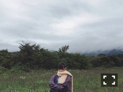
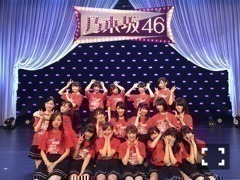

| 2016/09 25 Sun | つぎはひの。740回目 |

名古屋の全国握手会、
体調不良で握手会を欠席しました。
ご迷惑、ご心配おかけしました。
楽しみにしていたみなさんに
申し訳ないです。
しばらくは心が休まらないのと
落ち着かない日が続くけど、
集中しなきゃできないことしかないので
途切れないよう、体調面も気を付けます！
今日の個別握手会、
どうぞよろしくお願い致します。

しばらく建物にこもりっぱなしだから
森林浴したい！！

アンダーライブ全国ツアー
中国シリーズ終わりました〜！
広島、岡山、山口のみなさん
来てくださったみなさん
本当にありがとうございました。
新しい演出と立ち位置と考え方、
今までの自分とまったく違う
真っ新な気持ちで臨みました。
ステージに立っている時、
曲を身体でどう表現するか
その時の感覚でつくっていくあの感じ、
ひたすら楽しい！
だって全身で表現してるんだから
全身見てほしいもんね。
大きな箱だとそうもいかないんだけど。
どちらも違った魅力がある！
やっぱり最後のブロックが印象的。
命は美しい、自由の彼方、きっかけ
特にこの3曲。
いろんなことが頭の中を駆け巡って、
3日目で気持ちの整理がつきました。
舞台が終わった頃には
また気持ちに変化が出るかもしれない。
ずっとどこかで葛藤してます。
ずっと闘ってる。

スタッフの皆さん、メンバーのみんな
本当にお疲れ様でした！！
ひなちま、お疲れ様でした！！！！
照明と幕と後ろの舞台セットが
曲ごとにさらさら変わっていくんですけど、
めちゃくちゃかっこよくて感動してました！
生命力を感じる血管が伝ったような木
とても好きだった！！素敵でした〜〜

オープニングはツアーでも着た
この衣裳でした。
繊細なレースが可愛いのです＼(^o^)／
引き続き8人は舞台に
脳みそを切り替えます！
気合いで追いつけ追い越せ！
まりか
コメント(690)
2016/09/25 08:05